Incident Response — Lifecycle, Platform & Forensic Readiness
In Session 4 you said "yes, this is a real attack." Today you learn what a professional team does next — step by step, with a written plan, a proper case file, and evidence that still counts tomorrow.
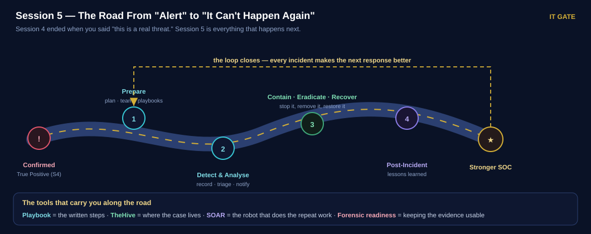
Today's agenda
| Block | Topic | Time |
|---|---|---|
| 1 | Recap Session 4 | 10 min |
| 2 | Event vs incident · the three frameworks (NIST · SANS · EC-Council) | 35 min |
| 3 | Phase 1 Preparation — team, policy, plan, playbooks | 45 min |
| 4 | Phase 2 Detection & Analysis — record, triage, notify | 30 min |
| — | Break | 15 min |
| 5 | Phase 3 Contain · Eradicate · Recover + Phase 4 Post-Incident | 40 min |
| 6 | TheHive — run a real case (lab) | 35 min |
| 7 | SOAR — automate the boring part | 20 min |
| 8 | Forensic readiness — evidence that still counts | 30 min |
| 9 | Knowledge check · homework | 10 min |
Detection skills get you hired as L1. Process skills get you promoted to L2 and IR. In a real breach, the team that wins is not the smartest — it is the one that already knew who does what.
Module 2 (Preparation & IR fundamentals) · Module 5 (Digital forensics foundations)
What You Will Be Able To Do
Turn a confirmed attack into a controlled, documented response.
- Explain the difference between an event, an alert and an incident.
- Compare the NIST, SANS and EC-Council lifecycles — and know which one we use.
- Walk every phase: preparation → detection & analysis → containment, eradication, recovery → post-incident.
- Write the difference between a policy, a plan and a playbook, and read a real playbook.
- Run a case in TheHive — tasks, observables, TLP/PAP, MITRE TTPs.
- Describe how SOAR automates a playbook, and where a human must stay.
- Collect evidence properly — order of volatility, chain of custody, write blockers.
Two sentences to memorise: "Contain before you clean. Collect before you contain." Everything else in incident response is detail.
Quick Recap — Session 4
Answer before you reveal.
Q1 In Wazuh, what is a decoder's job?
- Decide the alert severity
- Extract named fields from a raw log
- Block the attacker
- Store logs long-term
Q2 What is the main advantage of Sigma?
- It runs faster than a SIEM
- It blocks attacks automatically
- One rule converts to any SIEM
- It needs no log source
Q3 Two new alerts are waiting. Which do you take first?
- Higher severity; if equal, the older one
- The newest one
- The one assigned to a teammate
- Any — order doesn't matter
Q4 You closed an alert as True Positive. What happens next?
- Nothing — the case is finished
- Delete the logs
- Tune the detection rule
- Escalate — the IR process begins
Two Companies, One Ransomware
Same attack, same day. One lost two weeks. One lost two hours.
Company A saw the alert at 02:00. Nobody knew who to call. The IT engineer rebooted the server "to clean it" — destroying the memory evidence. No one wrote anything down. Management heard about it two days later from a customer. Recovery took two weeks, and they could never prove what was stolen.
Company B saw the same alert. The analyst opened the playbook for ransomware, created a case, isolated the machine from the network but left it powered on, captured memory, and notified the IR manager per the escalation matrix. Recovery from clean backups took two hours. The report showed exactly what happened.
Both had good analysts. Company B had done the preparation — a plan, a playbook, an escalation list, tested backups, and a rule about not powering off. That is what this session teaches.
Event · Alert · Incident — Say It Correctly
These three words are not the same, and using them wrongly confuses everyone.
| Word | Simple meaning | Example |
|---|---|---|
| Event | Anything that happened. Usually harmless. | A user logged in. |
| Alert | An event a rule found suspicious. | A user logged in 50 times and failed. |
| Incident | A confirmed event that harms or threatens the business. | The attacker succeeded and is inside. |
Event = something happened. Alert = a machine thinks it's suspicious. Incident = a human confirmed it's bad. Only a human declares an incident.
What counts as an incident?
Anything that breaks one of the three security promises — C.I.A.:
| Promise | Broken when… | Example incident |
|---|---|---|
| Confidentiality | someone sees data they shouldn't | Customer database stolen |
| Integrity | data is changed without permission | Website defaced, records edited |
| Availability | a service stops working | Ransomware, DDoS |
Not every alert becomes an incident — most are false positives. But every incident started as an alert someone took seriously. That is why triage quality decides everything downstream.
Module 2 — IR fundamentals: event vs incident, incident types and attack vectors
Three Frameworks — NIST vs SANS vs EC-Council
Students always ask "which one is correct?" — all of them. They describe the same journey.
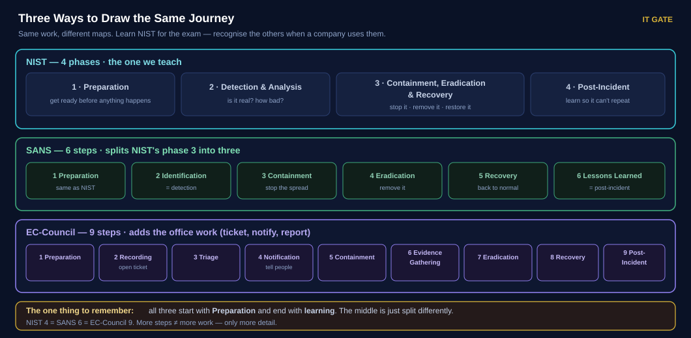
NIST — the four phases
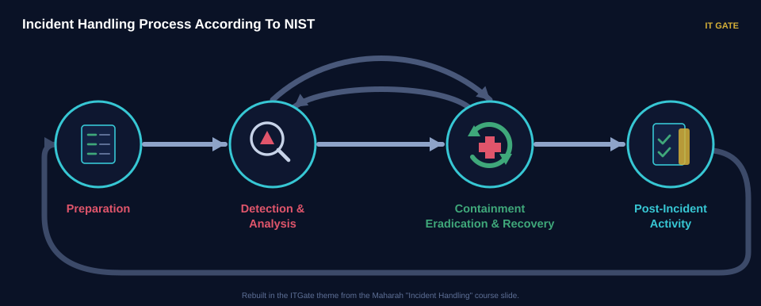
SANS — the six steps
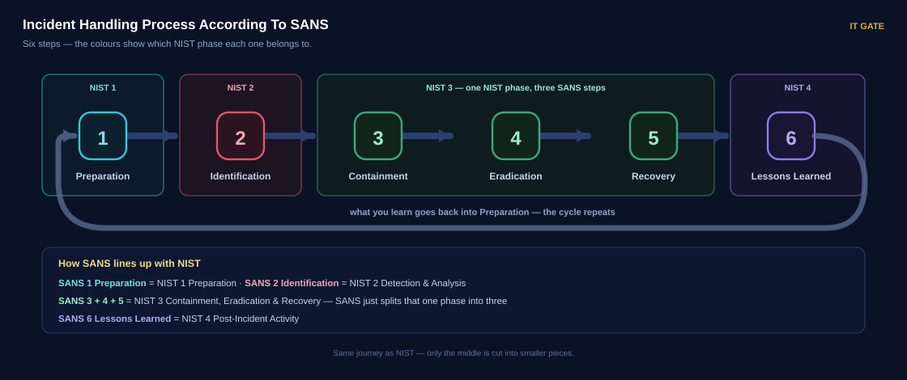
Notice the loop at the bottom. SANS draws the process as a cycle: what you learn in step 6 goes straight back into step 1, so the next incident is handled better. NIST means the same thing — SANS just makes it visible.
EC-Council — the nine steps
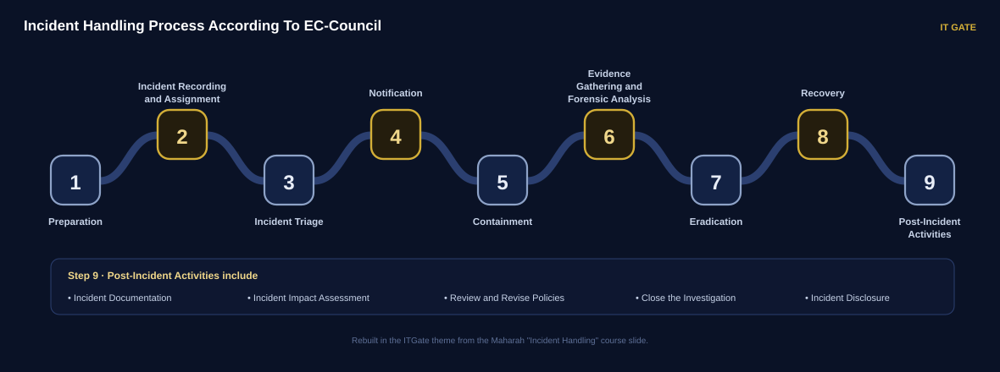
How they line up
| NIST (4) | SANS (6) | EC-Council (9) |
|---|---|---|
| Preparation | Preparation | Preparation |
| Detection & Analysis | Identification | Recording & Assignment · Triage · Notification |
| Containment, Eradication & Recovery | Containment · Eradication · Recovery | Containment · Evidence Gathering · Eradication · Recovery |
| Post-Incident Activity | Lessons Learned | Post-Incident Activities |
NIST is our reference (and the exam's). SANS is the same thing with the middle split — useful because real teams talk about "containment" and "eradication" separately. EC-Council adds the paperwork steps (ticket, notify, evidence) that actually happen in a real SOC.
Thinking more steps = a better framework. No — a small team may use NIST's 4 phases perfectly. The framework is just a checklist so you don't forget a step under pressure.
Module 2 — NIST vs SANS lifecycles, side by side
Phase 1 — Preparation
The only phase you do when nothing is wrong. It decides how the other three go.
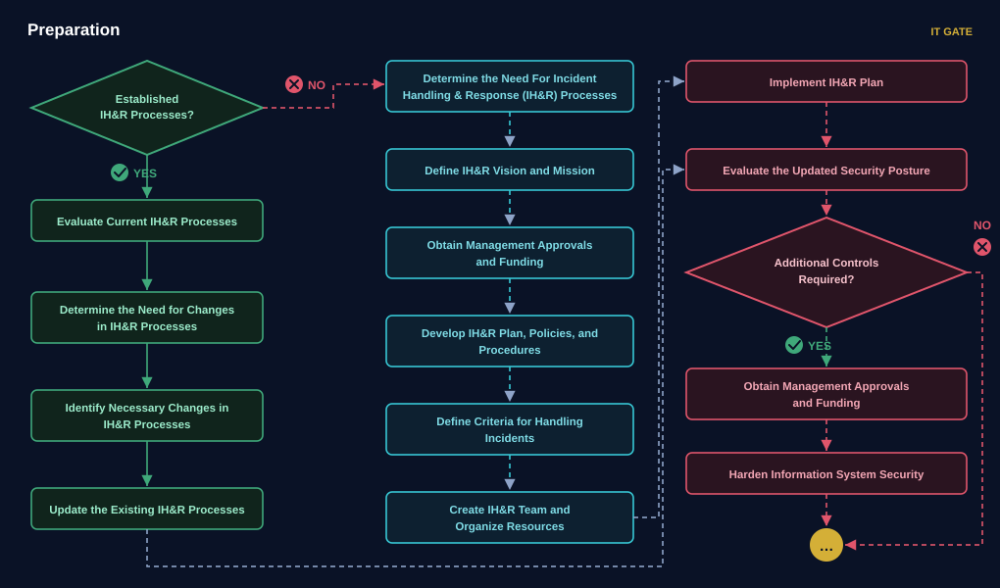
The document trio — the part students confuse most
| Document | Answers | Length | Fire analogy |
|---|---|---|---|
| Policy | What and why — the rule | 1–2 pages | "This building must be fire-safe." |
| Plan | Who and in what order | 10–30 pages | The fire escape plan on the wall |
| Playbook | Exactly how, for one incident type | 2–5 pages each | "If the kitchen burns: do these 6 things" |
Policy = the rule. Plan = the strategy. Playbook = the steps. Management signs the policy, the IR lead writes the plan, the senior analyst writes the playbooks.
Also prepared before anything happens
- Severity matrix — what counts as Low / Medium / High / Critical (agreed, not argued at 3 AM).
- Escalation matrix — which severity wakes which person.
- Contact list — IT, management, legal, HR, and the external IR firm if you have one.
- IR toolkit / jump bag — imaging tools, write blocker, clean USBs, notebook.
- Tested backups — a backup you never restored is not a backup.
Module 2 — Preparation phase, PPT framework, policy/plan/playbook trio, IR toolkit
The Team — CSIRT, CERT, and Who Does What
Lots of names for similar teams. What matters is that every phase has an owner.
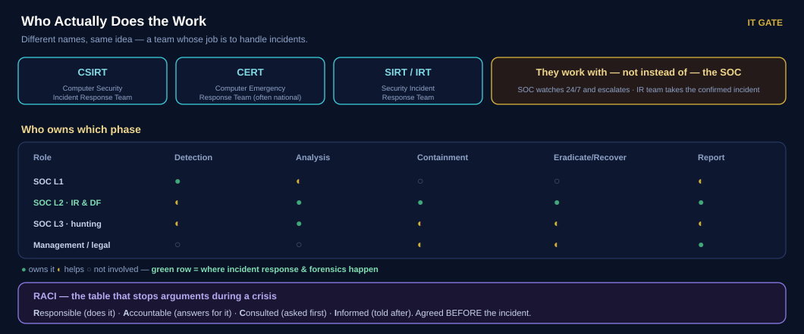
| Name | Stands for | Usually means |
|---|---|---|
| CSIRT | Computer Security Incident Response Team | The company's own IR team |
| CERT | Computer Emergency Response Team | Often national/government level |
| SIRT / IRT | (Security) Incident Response Team | Same idea, different company naming |
| SOC | Security Operations Center | Watches 24/7, escalates to IR |
Students often assume "L3 = the incident responder." That is wrong. Incident response and digital forensics sit with L2 — they are the ones who investigate the confirmed incident, contain it and carry out the forensics. L3 is threat hunting and detection engineering, a different job.
| Role | Main job | Owns which phases |
|---|---|---|
| SOC L1 | Monitor the queue, triage alerts, escalate | Detection |
| SOC L2 · IR & DF | Investigate, respond, contain, do the forensics | Analysis → Containment → Eradicate/Recover → Report |
| SOC L3 | Threat hunting, detection engineering, mentoring | Analysis (supports the rest) |
| Management / legal | Approvals, disclosure, legal duties | Report |
Remember it this way: L1 finds it, L2 fixes it, L3 hunts for what nobody reported yet.
Often the same three people are the SOC, the IR team and the IT team. That is fine — but the roles must still be written down, because during an incident you need to know who decides to shut down a production server.
"Isolate an infected laptop" → R: SOC L2 (does it) · A: IR manager (answers for it) · C: IT team (asked first) · I: the user's manager (told after).
Module 2 — IR team models (CSIRT/CERT/SIRT/IRT), role map and RACI
Playbooks — The Steps, Written Down
So a new analyst at 3 AM does the same good job as your best analyst.
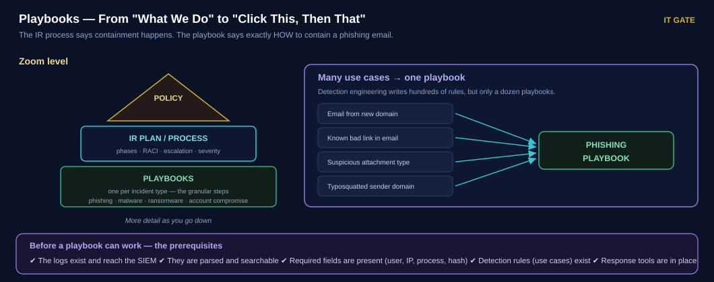
Why a plan is not enough
The IR plan says "containment actions will be taken." That sentence is useless at 3 AM. The playbook says: "block the sender domain on the mail gateway, block the file hash on the EDR, remove the email from all inboxes." That is the difference — granularity.
What every playbook contains
| Part | Meaning |
|---|---|
| Prerequisites | logs, fields, rules and tools that must exist first |
| Trigger (use cases) | which alerts start this playbook |
| Detection & analysis steps | what to check, in order |
| Containment / eradication / recovery | exact response actions |
| Roles | which step is L1, which is L2, which needs approval |
| Workflow diagram | the picture — usually the most-used page |
Phishing · Malware · Ransomware · Account compromise · Data exfiltration · Insider · Policy violation. A hundred detection rules may all lead to the same phishing playbook — that is normal.
A Real Phishing Playbook
Follow the diagrams — this is what a working playbook actually looks like.
Step 1 — Detection: what starts it
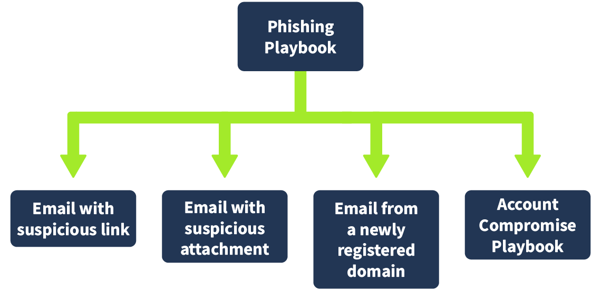
Step 2 — Analysis: what the analyst checks
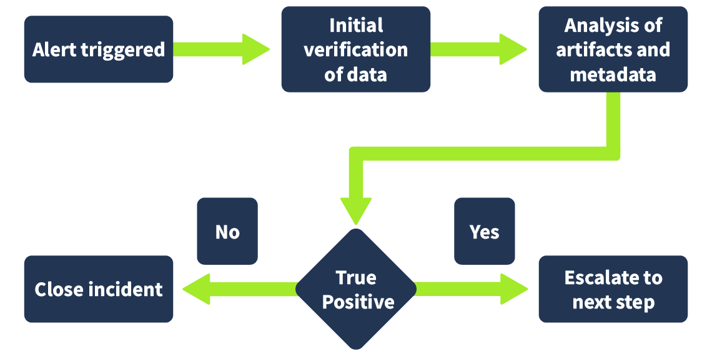
- Who sent it, who received it? Is the receiver a high-value target (finance, HR, CEO)?
- Pull out the URLs, attachments, QR codes.
- Check sender domain age and reputation — and look for typosquatting (Session 4 skills!).
- Check hashes and links on VirusTotal / URLScan.
- Hunt for anyone who clicked — suspicious logins after the email arrived.
Step 3 — Containment: stop the damage
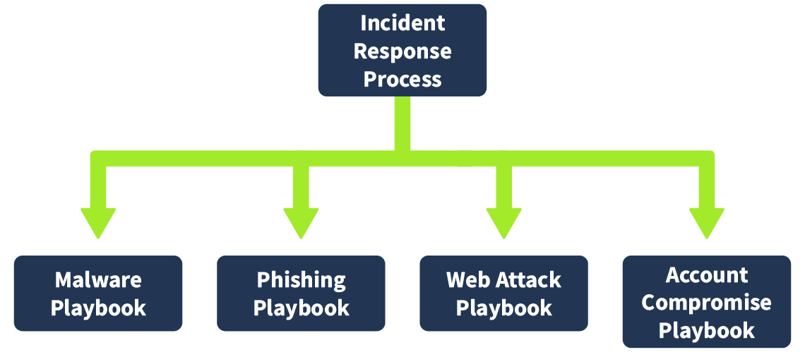
| Stage | Actions for phishing |
|---|---|
| Contain | block sender address, domain and IP on the mail gateway · block file hashes on EDR · block the URL on the proxy |
| Eradicate | delete the email from every inbox · if someone clicked: isolate the machine, kill sessions, reset the password, start the malware playbook |
| Recover | reset credentials + enable MFA · review what the account did · reimage affected machines |
The phishing playbook can call the malware playbook. Real playbooks connect to each other — that is normal and good.
Phase 2 — Detection & Analysis
Three small flows: write it down → decide how bad → tell the right people.
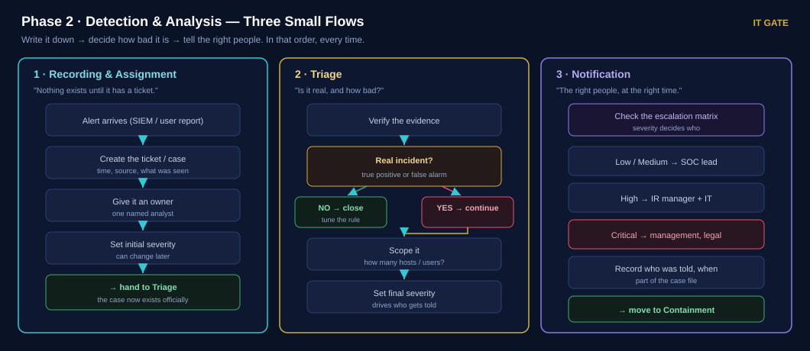
All eight process flows use the same symbols. Learn them here and every diagram becomes easy to follow.
| Symbol | Means |
|---|---|
| Rectangle | An action — do this |
| Diamond | A question — the flow splits here |
| Green ✓ circle | The YES branch |
| Red ✗ circle | The NO branch |
| Gold circle “…” | Connector — the flow continues from / into another phase |
| Thick gold outline | The most important step on that diagram |
| Blue box | A team or an outside input |
Tip for teaching: put the diagram on screen, then trace one path aloud from the top connector to the bottom connector before explaining any of the boxes.
Flow 1 · Recording & Assignment — "no ticket, no incident"
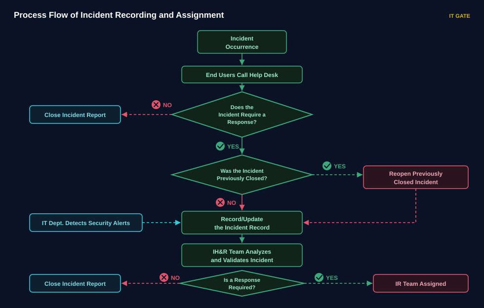
What this means, simply: an incident can arrive two ways — a person reports it, or a machine detects it. Either way it must become a written case with a number, a time and one named owner. If two people own it, nobody owns it.
The two questions in the diamonds are there for good reasons:
| Question | Why we ask it | If the answer is unexpected |
|---|---|---|
| Does it need a response? | Filters out noise and duplicates | NO → still record it, then close. The count matters for reporting. |
| Was it closed before? | Spots a returning attacker | YES → reopen the old case instead of starting fresh, so the history stays together. |
Last month you closed "suspicious login from Romania — user was travelling." Today the same alert fires for the same account. Because you reopen rather than open a new case, you instantly see it is the second time — and suddenly it looks much less like travel.
Flow 2 · Triage — is it real, is it ours, how urgent?
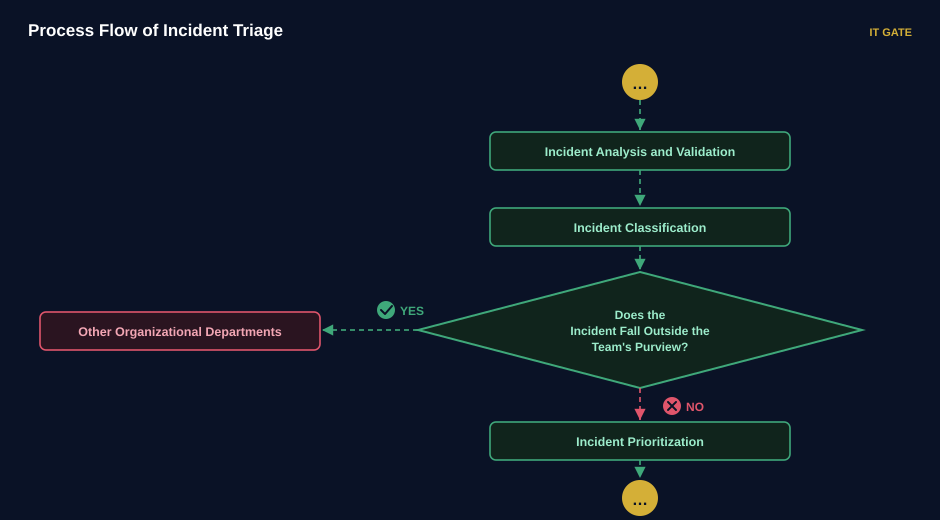
What this means, simply: first prove the evidence is real (Session 4's true/false positive call). Then say what type it is — malware, phishing, insider — because the type decides which playbook you open. Then check it is even your team's job. Finally, set the severity.
Someone stealing office laptops is a security problem, but not a cyber one — that goes to Facilities. An employee watching videos all day goes to HR, not the SOC. Knowing what is not yours keeps the queue clean.
Alert: "user downloaded 4 GB to a USB drive." Validate — it really happened. Classify — possible data theft (insider). Outside our scope? Partly: the SOC investigates the technical facts, but HR and Legal own the person. Severity: High, because data may already be gone.
Flow 3 · Notification — the right people, in the right order
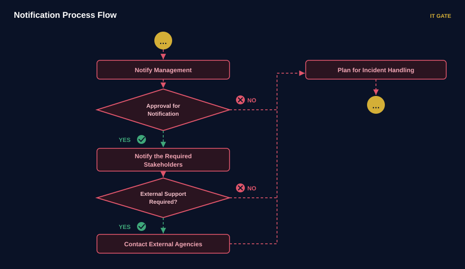
What this means, simply: you do not get to tell the whole company (or the press) yourself. Management is told first and approves who else hears about it. The escalation matrix — written back in Preparation — already says who that is, so nobody argues at 3 AM.
1 · Do not use compromised email. If the attacker is in the mail system, they will read your
incident emails. Switch to phone or a separate chat.
2 · Record who you told and when. After a real breach this becomes a legal question, and
"I think I called someone" is not an answer.
Module 2 — detection & analysis phase · Module 3 · 3.7 triage workflow and escalation
Knowledge Check — Lifecycle & Preparation
Q1 How many phases does the NIST lifecycle have?
- 3
- 6
- 4
- 9
Q2 What does SANS do differently from NIST?
- It removes preparation
- It splits containment, eradication and recovery apart
- It has no lessons-learned step
- It only applies to malware
Q3 What makes a playbook different from the IR plan?
- It is signed by management
- It is shorter than the policy
- It only covers preparation
- It gives exact steps for one incident type
Q4 When does an alert become an incident?
- When a human confirms real harm or threat
- As soon as the SIEM fires it
- When severity is set to Low
- After 24 hours automatically
Q5 Why is the escalation matrix written during Preparation?
- Because auditors require the file
- So nobody has to decide who to call during the crisis
- It replaces the playbook
- It is only used after recovery
Break
After the break: stopping the attack, then the tools — TheHive and SOAR.
Break time
Press start when the break begins.
Phase 3 — Contain, Collect, Eradicate, Recover
The most dangerous phase — because this is where people destroy their own evidence.
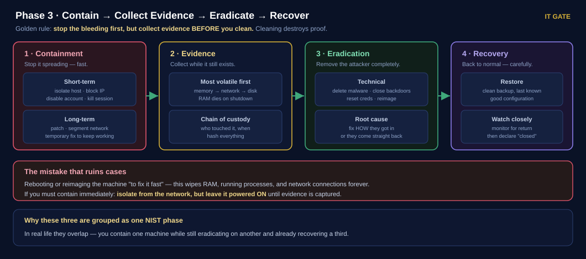
Containment — stop the bleeding
| Type | Meaning | Examples |
|---|---|---|
| Short-term | Stop it spreading right now | Isolate the host, block the IP, disable the account, kill the session |
| Long-term | A safe temporary state so business continues | Patch, segment the network, tighten firewall rules |
Flow 4 · Containment — three kinds of response
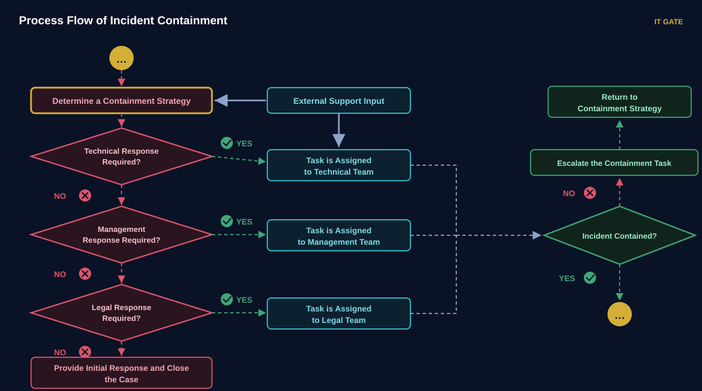
What this means, simply: containment is not only a technical job. The flow asks three separate questions, and an incident can answer YES to all three at once — each task goes to a different team, and they work in parallel.
| Branch | Who acts | What they actually do |
|---|---|---|
| Technical | SOC / IT | isolate the host, block the IP, disable the account, kill sessions |
| Management | Managers | approve taking a production server offline, decide to tell customers |
| Legal | Legal / compliance | breach-reporting duties, evidence rules, contracts, regulators |
Technical: isolate the server from the network. Management: approve the downtime — finance cannot work today. Legal: customer data may be involved, so the regulator may have to be told within 72 hours. All three branches fire on the same incident.
"Contained? → NO → escalate → go back to the strategy." Real containment often fails on the first try — the attacker has a second foothold you did not know about. The dashed line means try again with more people, not give up.
Do not power off or reboot to "clean it fast." That deletes RAM — running processes, injected malware, network connections, sometimes the encryption key. Instead: disconnect from the network but leave it ON until memory is captured.
Flow 5 · Evidence gathering — and how far to take it
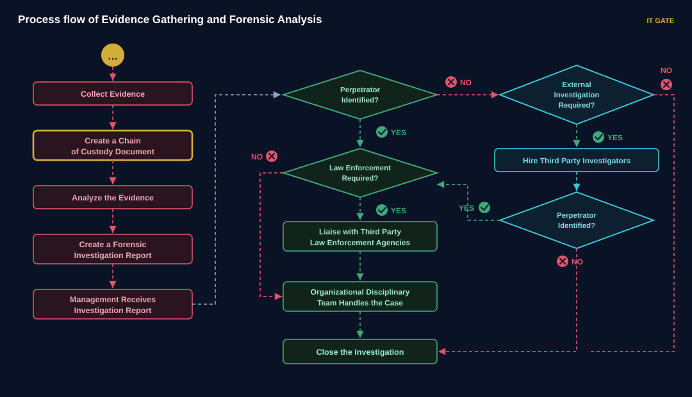
What this means, simply: the left column is the technical work you do. The diamonds at the bottom are business decisions made by management, not by you — but they are only possible because your report is solid.
| Decision | Meaning in plain words | Where it leads |
|---|---|---|
| Do we know who did it? | Did the forensics identify a person or group? | NO → consider hiring specialists |
| Hire outside investigators? | Is this beyond our skill or capacity? | YES → a DFIR firm takes over, then reports back |
| Law enforcement required? | Is this a crime we must report? | YES → police · NO → internal HR discipline |
An outsider ransomwares your company → law enforcement, and the evidence must survive court. An employee copies the client list before resigning → same forensic work, but it ends with HR and the company lawyer, not the police. Same evidence, different door.
Notice it is step 2 — immediately after collecting, before any analysis. If you start analysing first and document later, you can never prove the evidence was untouched in between.
Eradication — remove them completely
Delete the malware, close the backdoors, remove the attacker's accounts, reset stolen credentials, reimage if needed. Then the important part: fix the root cause. If they got in through an unpatched server and you only delete the malware, they will be back tomorrow.
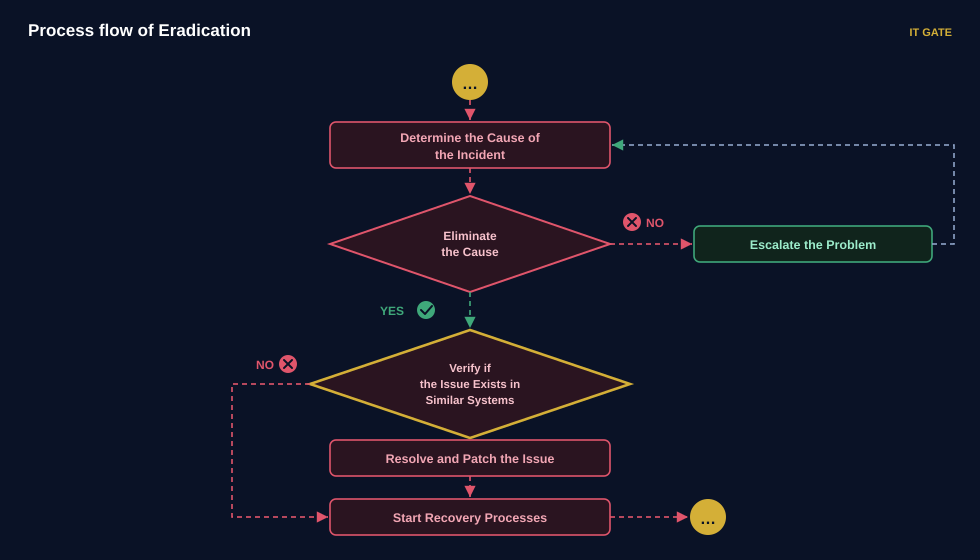
What this means, simply: two things make this flow different from "just delete the virus."
- The escalate loop — if you cannot remove the cause (a vendor bug, no patch yet), you do not pretend it is fixed. You escalate and come back.
- The "other systems" check — the single most-skipped step in real incidents.
An old web server was breached through an unpatched service. You clean it and feel finished — but the company runs nine more servers with that same version. If you skip the "similar systems" branch, tomorrow's incident is already waiting.
Flow 7 & 8 · Recovery, then Post-Incident
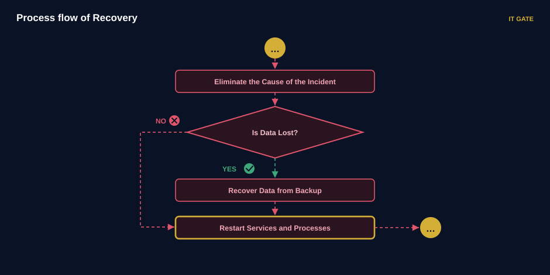
What recovery means, simply: one question decides the path — was data lost? If yes, restore from backup first, then restart services. If no, just restart. Either way you keep watching afterwards, because attackers commonly try to come back through a door you missed.
A backup taken after the attacker got in already contains their malware or backdoor. Always check that your restore point is older than the intrusion — which means you need the timeline from the evidence phase. This is why the phases are in this order.
What post-incident means, simply: five steps — document what happened, measure the damage, update the policies that failed, disclose if you legally must, and formally close the case.
Telling customers, regulators or the public is decided by legal and management — often with a legal deadline (for example 72 hours under GDPR). But they decide based on your report. Vague report → bad decision.
Module 2 — containment, eradication & recovery · technical / management / legal containment
Phase 4 — Post-Incident Activity
The phase everyone skips — and the only one that makes you stronger.
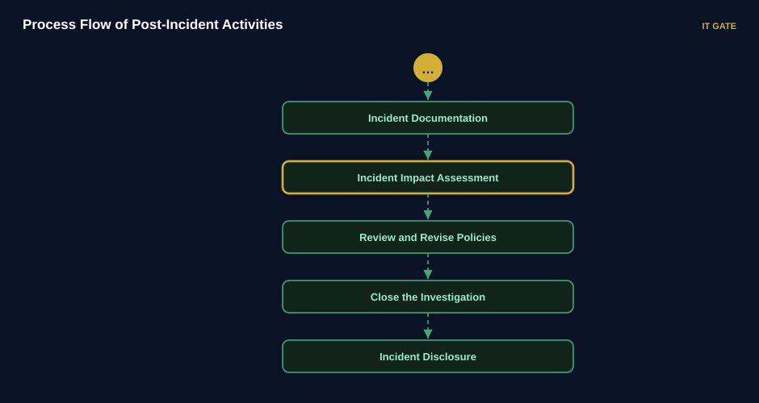
The meeting rule
The question is never "who clicked the link?" — it is "why was it possible for a click to cause this?" If people fear blame, they hide incidents, and hidden incidents become disasters.
What must come out of it
| Output | Why |
|---|---|
| Incident report | timeline, impact, actions taken — for management and legal |
| New detection rule | so the same attack alerts earlier next time (back to Session 4!) |
| Updated playbook | whatever was missing or wrong during the response |
| Training / awareness | for staff or for the analysts |
Post-incident feeds straight back into Preparation. That is why the lifecycle is drawn as a loop, not a line — every incident should leave the SOC better than it found it.
TheHive — Where the Case Lives
A free, open-source platform built for exactly this process.
Until now your "case" was a note in a text file. TheHive gives the whole team one place to track an incident: who owns it, what tasks remain, what evidence was found, and what the verdict was.
Three things it is built for
| Function | Meaning |
|---|---|
| Collaborate | several analysts work the same case at the same time, live |
| Elaborate | break a case into tasks, attach evidence, record progress |
| Act | add observables, flag IOCs, and trigger analysis or response |
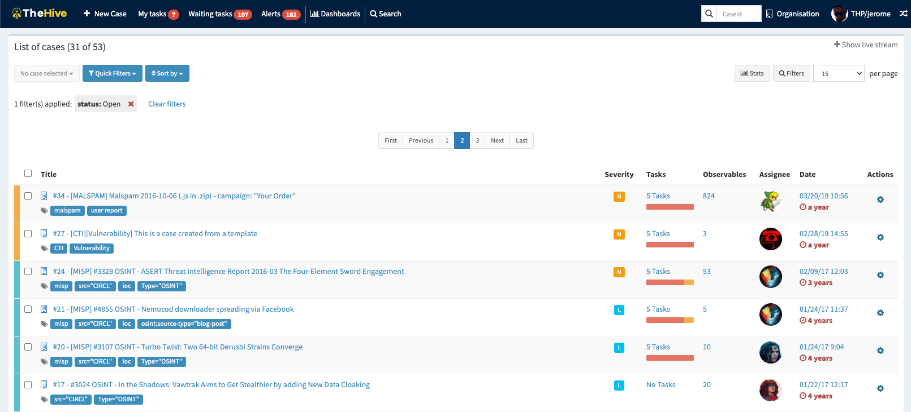
What it connects to
- Cortex — automatically analyses observables (like our Session 4 enrichment, but built in).
- MISP — threat-intel sharing: import IOCs, or share yours with the community.
- SIEM alerts — imported as alerts you can promote into cases.
Module 2 · 08 — TheHive incident management, Cortex, TLP/PAP
TheHive — Organisations, Users & Permissions
Who is allowed to do what — the admin side, in three screens.
Step 1 — create the organisation. An organisation is a container for your team, its cases and its users.
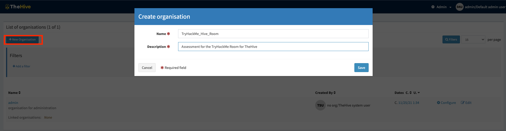
Step 2 — add users and give each one a profile.
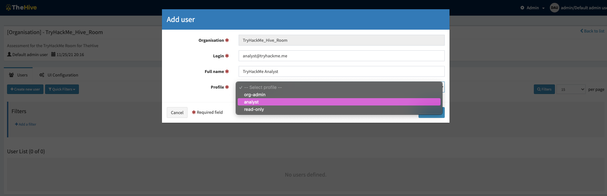
| Profile | Can do | Typical person |
|---|---|---|
| admin | runs the platform — but cannot work cases | Platform administrator |
| org-admin | manage users + full case work | SOC / IR manager |
| analyst | create and edit cases, tasks, observables; run analysers | SOC L1 / L2 |
| read-only | can only look | Auditor, trainee, management |
Step 3 — check the permissions attached to the profile before saving.
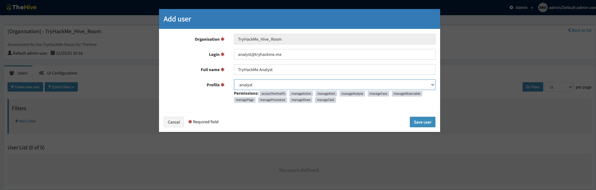
Notice the admin profile cannot open cases. That is deliberate: the person who manages the system is not automatically allowed to read sensitive investigations.
TheHive — Building a Real Case
Case → tasks → TTPs → observables. This is the digital version of the whole lifecycle.
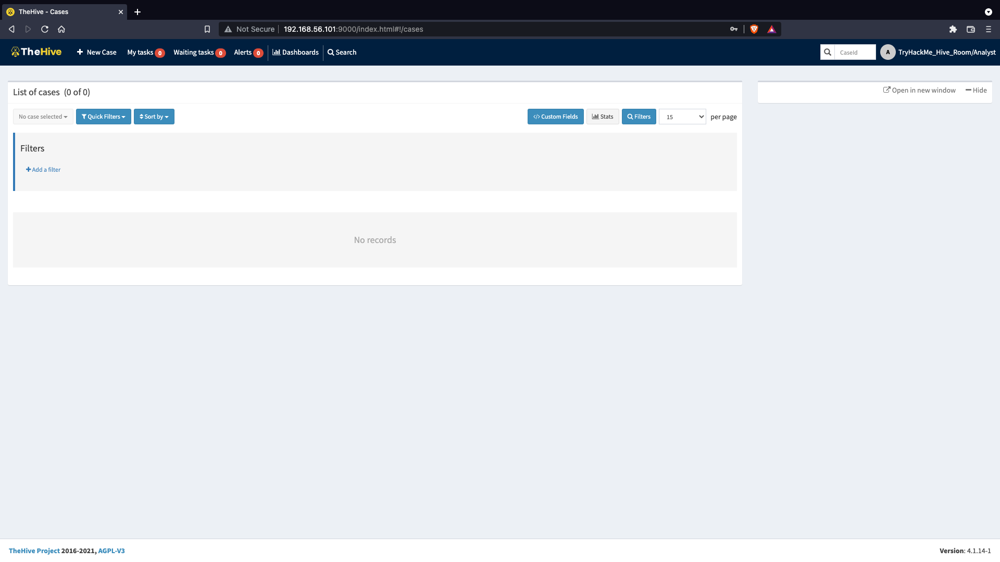
1 · Create the case
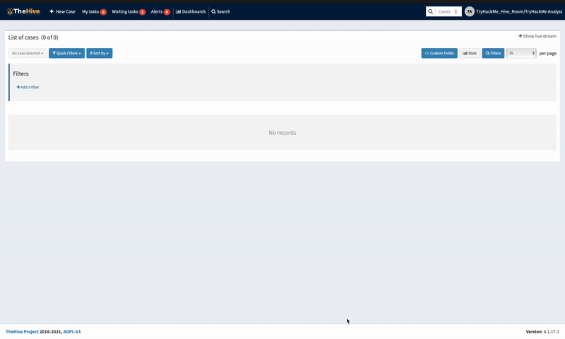
| Field | Simple meaning |
|---|---|
| Severity | how much damage — Low → Critical |
| TLP (Traffic Light Protocol) | Who may I share this with? RED = nobody outside, WHITE = public |
| PAP (Permissible Actions Protocol) | What may I do without the attacker noticing? RED = do nothing active |
| Tasks | the playbook steps, turned into checkboxes |
TLP = sharing. PAP = actions. Example: PAP:RED means don't even visit the attacker's domain in a browser — they would see your company's IP and know you found them.
2 · Attach the MITRE technique
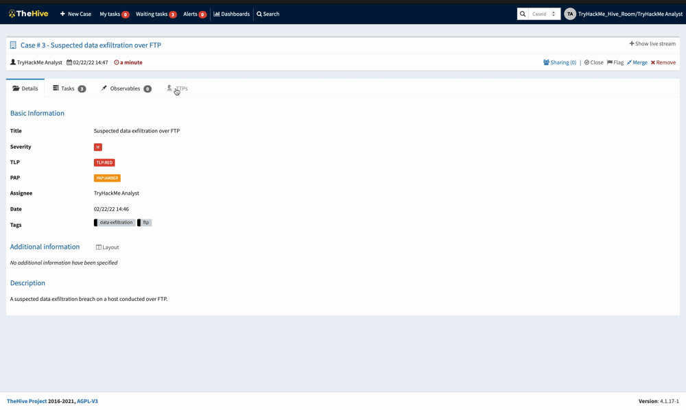
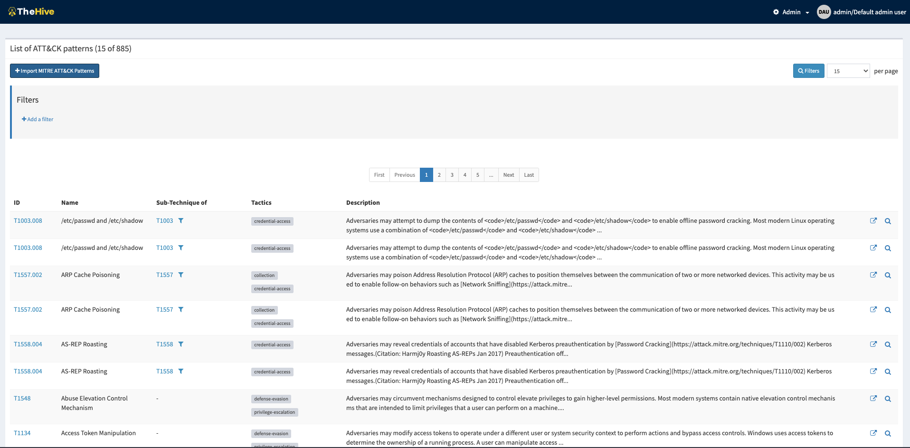
3 · Add the observables (your IOCs)
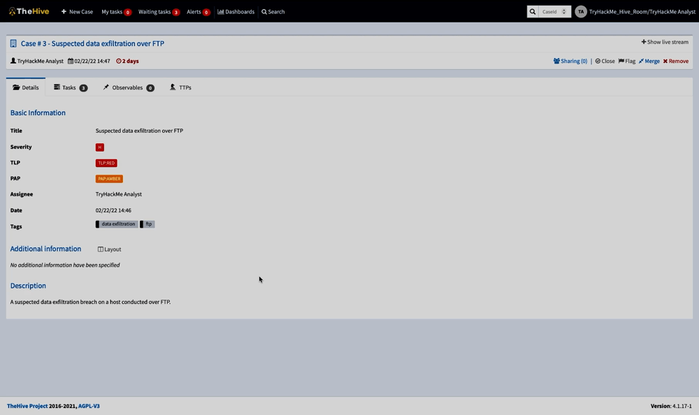
The IOCs you enriched last session (IP, domain, hash) become observables here — marked "is IOC", tagged, and shareable with your team and MISP.
Lab — Run a Case From Start to Finish
Scenario: suspected data exfiltration over FTP. Build the case an auditor would accept.
In-class TheHive VM (TryHackMe · TheHive Project). Log in with the analyst profile given in the room. You also get a PCAP file to look at in Wireshark.
- Look at the evidence. Open the PCAP in Wireshark. Find the FTP traffic and note the source IP doing the transfer.
- Create the case. Title it clearly ("Suspected data exfiltration over FTP"). Set
Severity, TLP and PAP, and add tags
(
data exfiltration,ftp). - Add tasks that match the lifecycle — for example:
"Analyse PCAP" · "Identify data transferred" · "Contain the host" · "Notify manager" · "Write report"
- Add the MITRE TTP. Tactic = Exfiltration, technique =
T1048.003(exfiltration over unencrypted non-C2 protocol). - Add the observable. Type = IP, value = the source IP you found. Tick Is IOC, add a short description.
- Close the loop. Complete a task, write a comment explaining your verdict.
✅ Verification
- Your case appears in the case list with the correct severity and TLP
- At least 3 tasks exist, and one is marked done
- The case has a MITRE technique attached
- At least one observable is flagged as an IOC
Ask yourself at each step: which NIST phase am I in right now? Creating the case = Detection & Analysis. Adding "contain the host" = Phase 3. The tool is just the lifecycle with buttons.
SOAR — Let the Robot Do the Boring Part
Security Orchestration, Automation and Response.
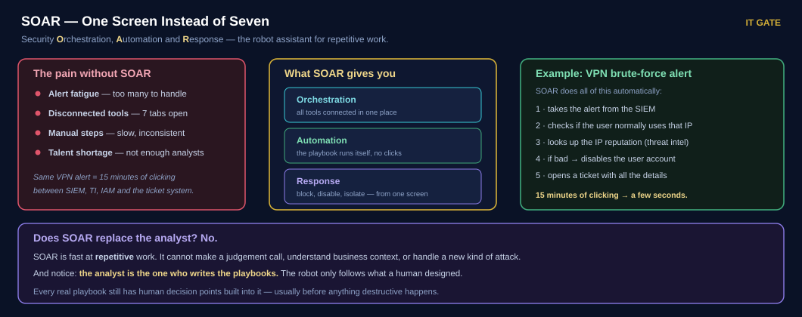
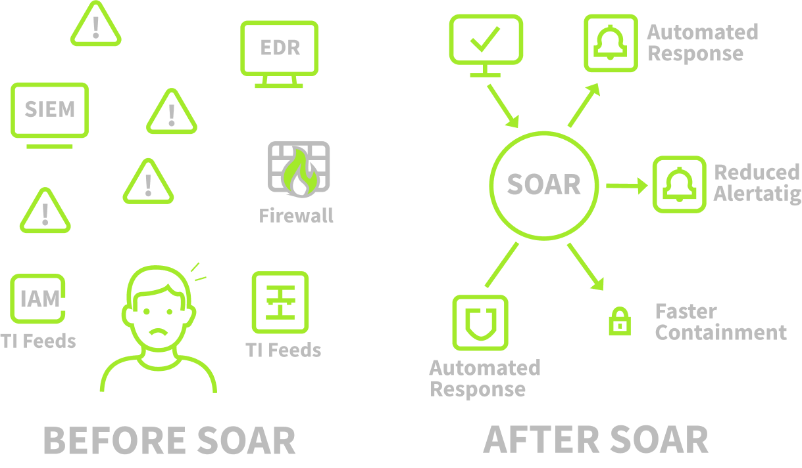
The three letters, in plain words
| Letter | Means | Example |
|---|---|---|
| O — Orchestration | connect all your tools together | SIEM + threat intel + firewall + ticket system in one screen |
| A — Automation | the playbook runs by itself | no analyst clicks needed for the repetitive checks |
| R — Response | take action from that one screen | block IP, disable user, isolate host |
An IR playbook is a document a human follows. A SOAR playbook is that same document turned into automated steps. You cannot automate what you never wrote down — which is why Preparation comes first.
It handles repetitive work. It cannot make judgement calls, understand business context, or respond to a new kind of attack. And humans are the ones who write the playbooks it follows.
Reading a SOAR Playbook
A flow chart of "if this, then that" — with humans at the important corners.
Phishing playbook
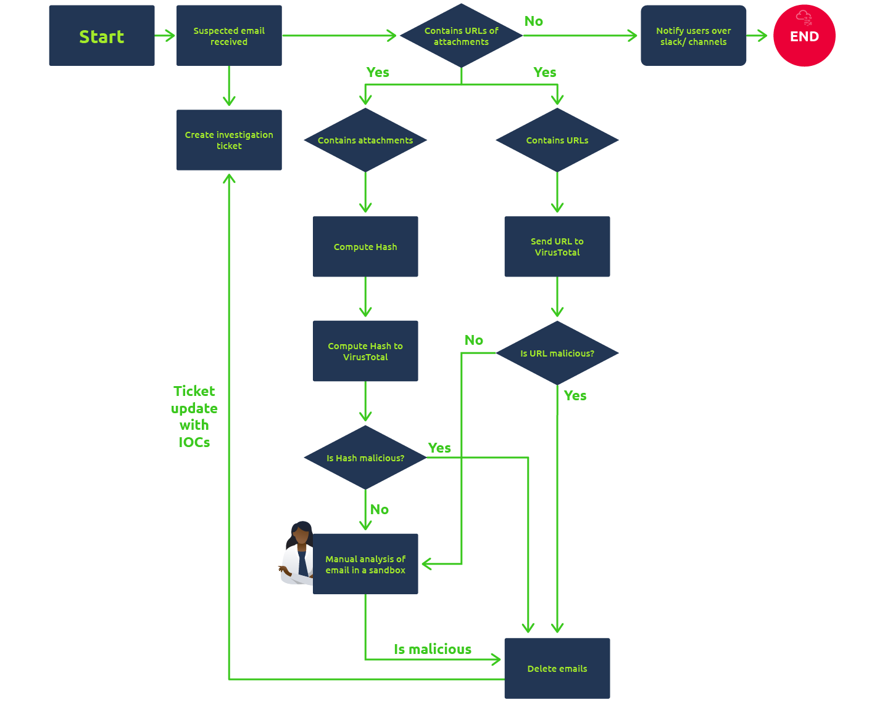
How to read it: start at the top ("suspicious email received"). Each diamond is a question; each box is an action. Follow one path down and say it out loud — that is the whole playbook.
CVE patching playbook
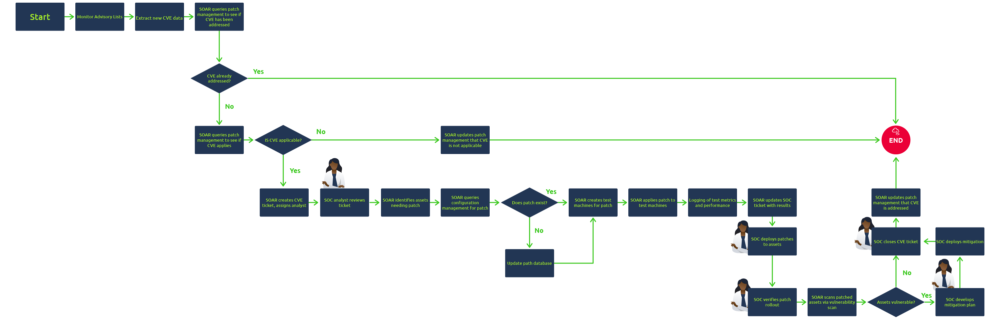
In both diagrams, most steps are automated — but a few clearly say "analyst". Those are the points where a judgement call or an approval is needed (usually just before something destructive or irreversible).
Pick the phishing diagram and trace one path from top to bottom out loud, as a team. Then ask: which step would you refuse to automate, and why?
Forensic Readiness — Why It Belongs Here
Forensics is not a separate job. It is a way of working during the incident.
Digital forensics = finding and analysing evidence on digital devices in a way that survives scrutiny — from your manager, an auditor, or a court.
Police raid a suspect's home and take a laptop, a phone and a USB stick. The forensics team finds a map of a bank on the laptop, escape routes in a document, and chat records on the phone. Same skills — we just do it for company incidents instead.
The four phases (NIST)
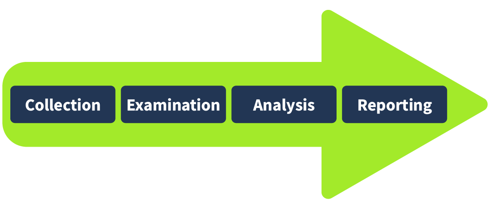
| Phase | Plain meaning |
|---|---|
| 1 Collection | gather the devices/data safely, without changing anything |
| 2 Examination | filter the mountain of data down to what matters |
| 3 Analysis | connect the pieces into a timeline of what happened |
| 4 Reporting | write it so both an engineer and a manager understand |
Types of digital forensics
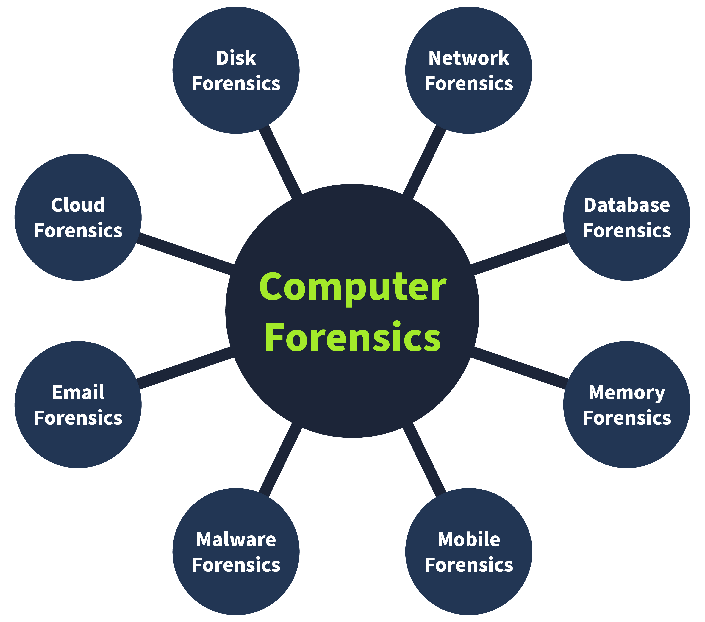
Computer · Mobile · Network · Database · Cloud · Email — Sessions 6–9 take these one at a time, each with its own incident type.
Module 5 — digital forensics in IR, the DF process, Locard's exchange principle
Handling Evidence So It Still Counts
Collect in the right order, prove nobody changed it, never write to the original.
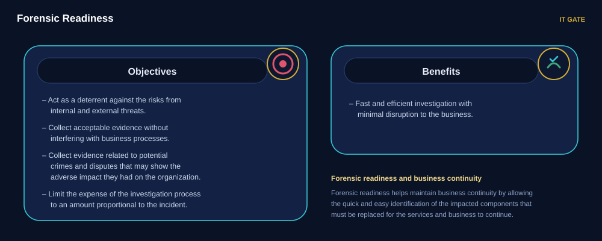
Order of volatility — grab what is dying first
Some evidence disappears in seconds; some is still there next month. Always collect the fastest-disappearing thing first.
| Order | Evidence | Lost when… |
|---|---|---|
| 1 | CPU registers & cache | instantly |
| 2 | RAM / memory ⭐ | the machine powers off |
| 3 | Network connections, ARP cache | seconds to minutes |
| 4 | Running processes, open files | the process ends |
| 5 | Disk — files, registry, logs ⭐ | survives reboot |
| 6 | Backups, archived logs | slowest of all |
Items 2, 3 and 4 all live in memory. One reboot deletes them permanently — including the running malware you were trying to catch.
Two forensic images
| Image | Contains | Volatile? |
|---|---|---|
| Memory image | RAM — running processes, connections, injected code | Yes — take it first |
| Disk image | everything on the drive, bit by bit | No — survives restart |
Chain of custody — the evidence logbook
A form that records: what the evidence is, who collected it, when, where it is stored, and every person who touched it since. One gap and the evidence can be thrown out.
Write blockers
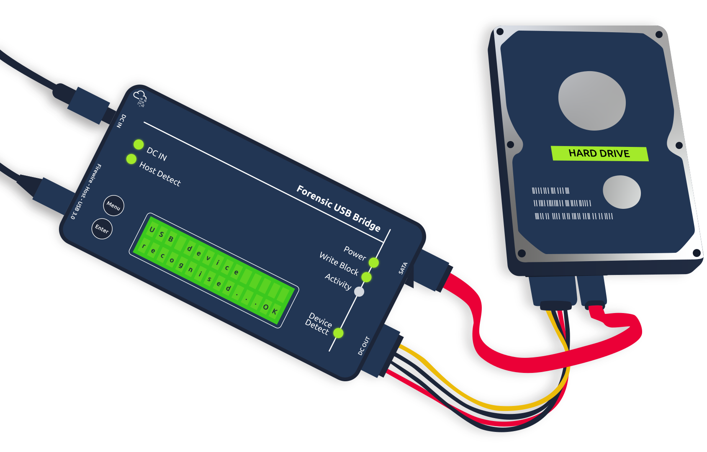
Plug a suspect's drive straight into your PC and the operating system will quietly touch it — changing timestamps and ruining your evidence. A write blocker sits in between and physically allows read only.
Hash the evidence when you collect it. Hash it again later. Same hash = nothing changed. That single number is what makes your evidence trustworthy.
Module 5 — evidence types, order of volatility, chain of custody, rules of evidence
The Tools You'll Meet in Sessions 6–9
Just recognise them today — you will use them properly per incident type.
| Tool | Used for | Acquire or Analyse? |
|---|---|---|
| FTK Imager | disk images (and quick preview) | both |
| Autopsy | digging through a disk image | analyse |
| DumpIt | capturing RAM on Windows | acquire |
| Volatility | analysing a memory image | analyse |
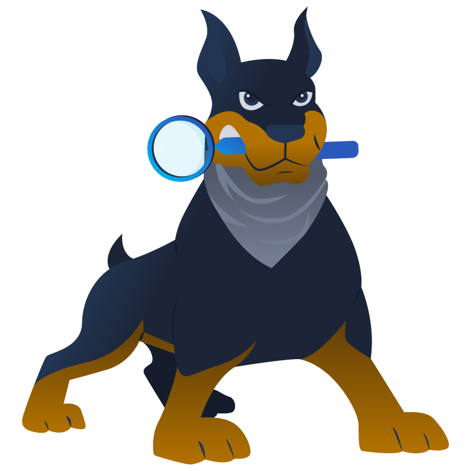
Metadata is everywhere. pdfinfo report.pdf shows who created a document and when;
exiftool photo.jpg can reveal the camera and even GPS coordinates. Attackers
forget this constantly.
Session 6 goes deep on malware incidents — including memory forensics with Volatility on a real infected image.
Knowledge Check — Response, Tools & Evidence
Q1 A host is infected. What should you not do first?
- Disconnect it from the network
- Capture a memory image
- Power it off and reboot to clean it
- Open a case and assign an owner
Q2 Which do you collect first — memory or disk?
- Disk — it holds more data
- Memory — it disappears on shutdown
- Either, order does not matter
- Neither — collect backups first
Q3 What is the chain of custody for?
- Choosing which tool to use
- Blocking the attacker's IP
- Deciding incident severity
- Proving evidence was never altered
Q4 Why use a write blocker?
- It lets you read the drive without changing it
- It speeds up imaging
- It encrypts the evidence
- It deletes malware automatically
Q5 In TheHive, what is the difference between TLP and PAP?
- TLP is severity, PAP is priority
- TLP = who you can share with, PAP = what actions you may take
- They mean the same thing
- TLP is for malware, PAP is for phishing
Q6 Does SOAR replace SOC analysts?
- Yes, fully
- Yes, for all L1 work
- No — it automates repetitive work only
- No — SOAR cannot take any action
Q7 You deleted the malware but the attacker returns next day. What was skipped?
- Fixing the root cause during eradication
- Setting the case severity
- The chain of custody form
- The TLP marking
Summary & Cheat Sheet
What we learned, in order
- Event vs alert vs incident — only a human declares an incident.
- NIST (4) · SANS (6) · EC-Council (9) — the same journey, cut differently.
- Preparation — team, policy, plan, playbooks, matrices, backups.
- Detection & Analysis — record → triage → notify.
- Contain → collect evidence → eradicate → recover (never reboot first).
- Post-incident — 5 Whys, blameless, feeds back into preparation.
- TheHive for the case, SOAR for automation.
- Forensic readiness — volatility order, chain of custody, write blockers, hashing.
📋 Session 5 Cheat Sheet
NIST · 4 phases
- 1 Preparation
- 2 Detection & Analysis
- 3 Containment, Eradication, Recovery
- 4 Post-Incident Activity
SANS · 6 steps
- Preparation · Identification
- Containment · Eradication
- Recovery · Lessons Learned
EC-Council · 9 steps
- Prep · Recording · Triage
- Notification · Containment
- Evidence · Eradication
- Recovery · Post-Incident
Document trio
- Policy = the rule (what/why)
- Plan = who & in what order
- Playbook = exact steps, per type
Order of volatility
- 1 registers/cache
- 2 RAM · 3 network
- 4 processes · 5 disk
- 6 backups/archives
Evidence rules
- Authorisation first
- Write blocker always
- Work on a copy
- Hash before & after
- Chain of custody unbroken
TheHive
- Case → Tasks → Observables
- TLP = who to share with
- PAP = what actions allowed
- Profiles: admin · org-admin · analyst · read-only
SOAR
- Orchestration = tools connected
- Automation = playbook self-runs
- Response = act from one screen
- Humans keep judgement calls
Golden rules
- Contain before you clean
- Collect before you contain
- Never power off — isolate
- Fix the root cause
- Blameless post-incident
You know the process. Session 6 runs it for real on a malware incident — detection, the full IR arc, and memory forensics with Volatility.
Key Takeaways
- An incident is confirmed harm — a machine raises alerts, a human declares incidents.
- NIST, SANS and EC-Council describe the same journey; we use NIST's 4 phases.
- Preparation decides everything. The plan you didn't write is the one you'll need at 3 AM.
- Policy = rule · Plan = strategy · Playbook = the exact steps.
- Record → triage → notify. No ticket, no incident.
- Contain before you clean; collect before you contain. Never power off — isolate.
- Eradication without root cause just invites them back tomorrow.
- Post-incident is blameless and feeds straight back into preparation.
- Evidence needs volatility order, chain of custody, a write blocker and a hash — or it's worthless.
Homework
All free rooms — no subscription needed.
Milestone Review — Sessions 1 to 5
RequiredDue · 25 Aug50 questions covering everything from the SOC basics to forensic readiness (different from the class Kahoot). It scores you and tells you which sessions to revise. Do this before Session 6 — the forensics and IR deep dives assume all of it.
Finish the lab — a complete case in TheHive
RequiredDue · 25 AugYour case must have severity + TLP + PAP set, at least 3 tasks, one MITRE technique, and one observable flagged as an IOC.
TryHackMe — Digital Forensics Fundamentals
Optional · premiumDue · 1 SepNote: this room is premium — only Task 1 is free. Do it only if you already have a TryHackMe subscription; otherwise your instructor will cover the same material in class. It covers the DF phases, evidence acquisition and chain of custody.
Write a mini playbook (one page)
RequiredDue · 25 AugPick one incident type (phishing, ransomware, or account compromise). Write: prerequisites → trigger use cases → analysis steps → containment → eradication → recovery. Keep it to one page.
TryHackMe — Intro to Cyber Threat Intel (free · revision)
OptionalDue · 1 SepIf you missed it in Session 4 — it connects directly to observables and MISP in TheHive.
In-class rooms (TheHive Project, Introduction to SOAR, IR Playbooks, Digital Forensics Fundamentals) are premium and instructor-led — you are never required to pay for anything. Progress is saved in this browser.
References
Primary source — INE eCIR v2
| Topic | INE module |
|---|---|
| IR fundamentals, event vs incident, team models | Module 2 |
| NIST vs SANS lifecycles, PPT, policy/plan/playbook | Module 2 |
| TheHive, Cortex, TLP / PAP | Module 2 · 08 |
| DF process, chain of custody, rules of evidence | Module 5 |
| Evidence types, order of volatility, acquisition | Module 5 |
Supporting source — Maharah Tech (Incident Handling)
Chapter 1 — the incident-handling process: preparation flow, recording & assignment, triage, notification, containment, evidence gathering, eradication, recovery, post-incident and forensic readiness. Process diagrams in this session were redrawn in the ITGate theme from that chapter's flowcharts.
In-class labs — TryHackMe (instructor-led)
Homework labs — TryHackMe (free)
- Digital Forensics Fundamentals (premium — in class)
- Intro to Cyber Threat Intelligence
Useful standards & templates
- NIST SP 800-61 — Computer Security Incident Handling Guide
- NIST sample chain-of-custody form
- CISA — Traffic Light Protocol (TLP) definitions · MISP taxonomies — PAP
INE is the primary reference for the exam. Maharah and THM reinforce — where wording differs, INE wins. Screenshots are credited to their source room and used as figures only.
Create a homework task
Add your own lab, reading or exercise to this session's homework list.
Navigate with ← → arrow keys